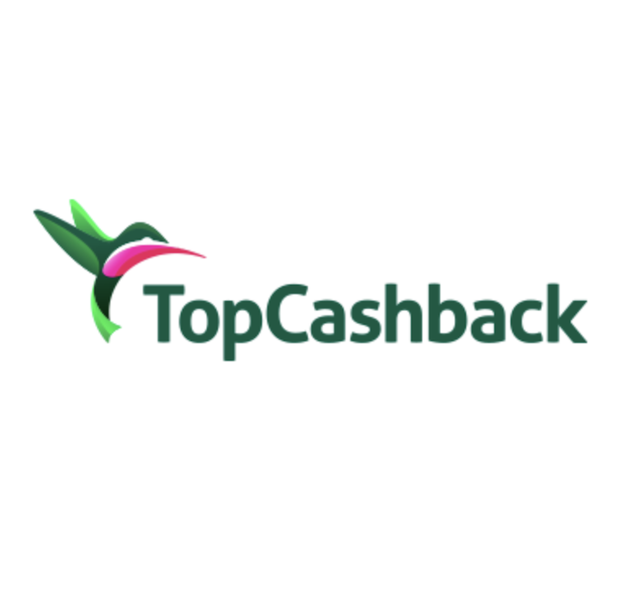
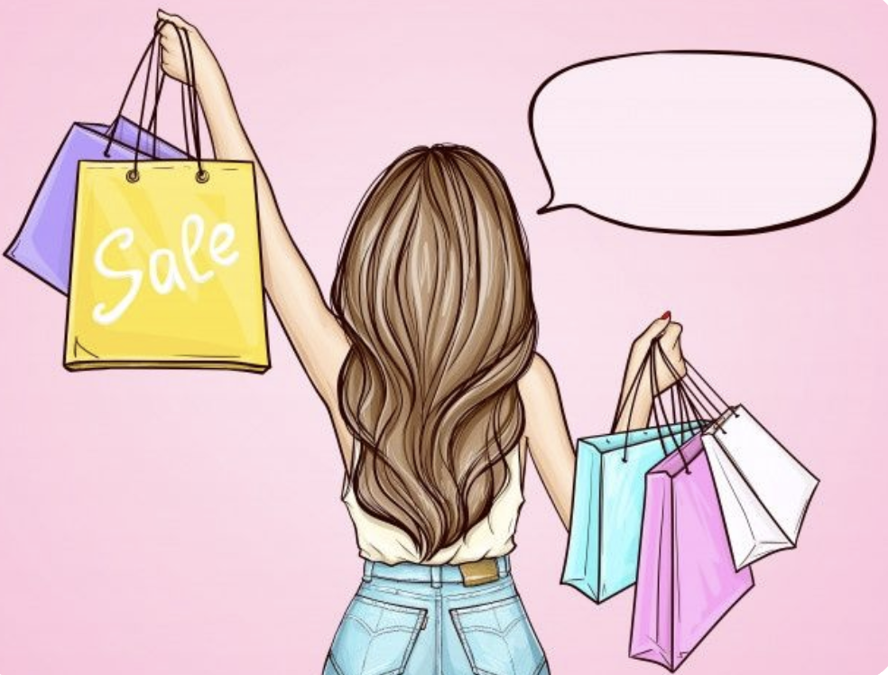
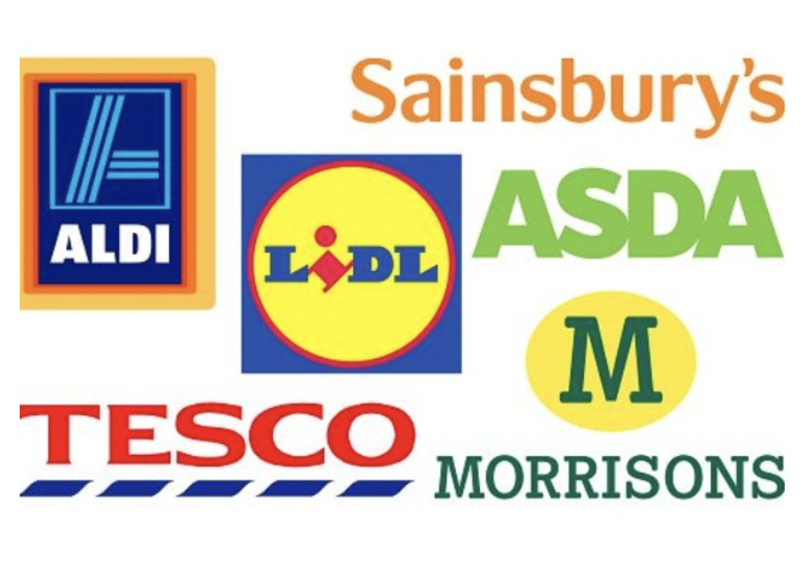
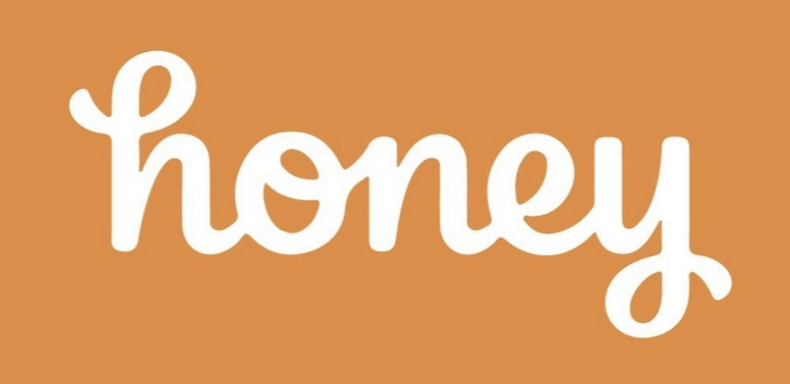

TopCashback is a cashback website that allows users to earn money back on their online purchases from various retailers. Users can sign up for free and browse through thousands of deals and cashback offers on the TopCashback website. When they make a purchase through a retailer's link on TopCashback, the retailer pays a commission to TopCashback, and TopCashback shares a portion of that commission with the user in the form of cashback.
Sign up here

Online shopping can help you save money by following simple steps. As mentioned above, you can use TopCashback to get a percentage of your final sale back, you can also use promo codes found online or when you first join, or opting into their premium membership, you are automatically given better benefits than an average customer such as free delivery and exclusive deals.

Shopping for groceries can be quite the task especially after some random price hikes! There are ways to cut back on your overall spenditure e.g. signing up to a loyalty scheme, (LIDL plus is great!), substituting well-known brands for store brands. Also, keep an eye on your mobile phone providers rewards. Vodafones "VeryMe Rewards" have giftcards between £1-£5 which you can use on your overall spend.

Honey is a browser extension that searches the internet for promotional codes that may be applicable for your basket! So whether you're shopping on ASOS or something tech - theres probably a code for that!